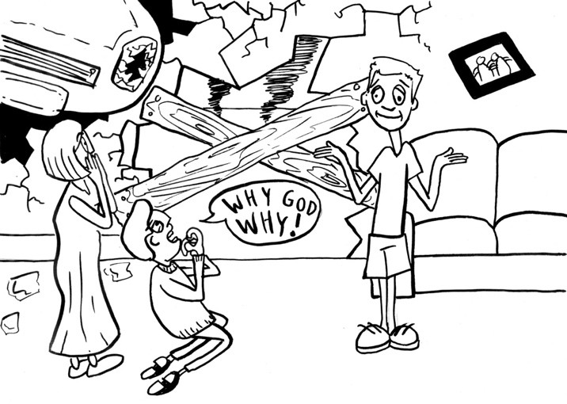

Look. Learn. Laugh!
Answer One
Andy would be liable if he did not warn the pizza boy that driveway is slippery.
Answer Two
It's assault because battery requires ACTUAL harm and assault constitutes as "threatening to harm".
Answer Three
Yes. If Bobby the Bully wants to be successfully sued for defamation from a PUBLIC FIGURE, the plaintiff could easily prove Bobby the Bully showed a higher standard, or actual malice, and reckless disregard of the truth.
Answer Four
Yes. Because Andy took a substantial route away from his work, he would be liable for any accident he causes. This falls under "Frolic" in vicarious liability.
Answer Five
No. Mrs. Fryer may get fired but she cannot be sued for defamation because she does not really know the new student.
Answer Six
Farmer Dole IS LIABLE for Andy’s injuries even though the cage is locked and secure. Farmer Dole can be sued under STRICT LIABILITY as wild animals are inherently dangerous, and Farmer Dole is still at fault no matter how much care is taken.

Answer Seven
No. If the accident came from a natural, unexpected event that is the cause of the damage, like a tornado that suddenly appears; Andy will not be liable.
Answer Eight
No. If the plaintiff had the last clear chance to get out of the way to avoid damage, then Andy will not be liable.
Answer Nine
Unfortunately, yes. Even though Andy and his buddy could have suffered severe injuries and it's imperative to break down the door for safety, they would still be liable for damages due to "necessity".
Answer Ten
Yes. Andy could use the duress defense. Duress is any conduct which overpowers will and coerces conduct that otherwise would not be done. This is very common in spy films. However, Andy CANNOT use the duress defense if he is coerced into murder.